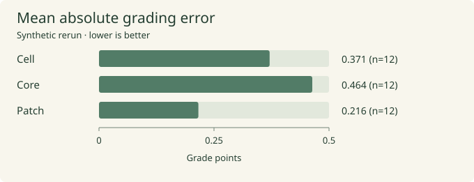

What did the PhD investigate?
I built a way to work with large scans of lymphoma tissue at three scales: cores, patches and cells. The thesis asks how well these images can reproduce assessors’ grading scores and predict the supplied subtype labels. The code examples use generated inputs.
| File and date | Outcome |
|---|---|
research_questions.md (Nov 2026) | Sets out the grading and subtype questions, and the engineering problem of making the image data practical to work with.2 prediction tasks · 3 image scales |
README.md (Nov 2026) | Shows how to run a single example or reproduce the grading figure and its intermediate files. |
# Research questions My doctoral thesis investigated how much useful information could be learned from images of diffuse large B-cell lymphoma tissue. - **Prepare the material.** Could large scans be converted into labelled image regions and representations that were practical to store and process? - **Estimate expert scores.** How closely could models using cells, patches or tissue cores match the supplied labelling scores? - **Compare subtype predictions.** Which representations worked best for predicting supplied subtype labels, and which image features appeared important to those predictions? These are different questions. Matching a supplied score or label tests agreement with that reference in the study design. The practical cost of preparing, storing and training on the inputs is a separate part of the comparison. Source — Samuel Llanwarne, *Multi-Scale and Multi-Stage Deep Learning for the Classification of Diffuse Large B-cell Lymphoma Histology*, University of Leeds, 2026, Chapter 1.
# PhD research scripts This collection follows the work from preparing lymphoma tissue images through to comparing models, checking results and rebuilding thesis figures. Each script demonstrates one task on a small set of generated inputs. Run the examples from this folder with Python 3.9 or later. Install NumPy and Pillow with `python -m pip install numpy pillow`. The encoding comparison uses Pillow with WebP support. Run `python record_crop_marks.py` to see the annotation CSV, or `python run_grading_example.py --output grading-demo` to reproduce the grading workflow. The grading example saves split assignments, out-of-fold predictions, an assessor comparison and the SVG figure in that folder. Run `python build_grading_table.py grading-demo/predictions.csv` to build the summary from those predictions. The examples use small implementations to show the steps in the research. For instance, ridge regression illustrates the grading workflow and a linear autoencoder illustrates reconstruction. The historical extraction figures in [`crop_benchmark.csv`](crop_benchmark.csv) come from thesis Table 2.5. Run `python weight_grading_examples.py` to reproduce the sample-weight calculation in Appendix A, or `python probe_grading_model_with_noise.py` to see the structure of its independent Gaussian-noise probe. For the subtype model investigation, `python compare_spatial_attention.py` and `python compare_flat_and_hierarchical_pooling.py` isolate position and pooling. The separate PatchCamelyon archive work is illustrated by `build_benchmark_bags.py` and `compare_benchmark_encoders.py`. They use generated patch IDs and stand-in encoder outputs. The original archive includes [CLAM](https://github.com/mahmoodlab/CLAM) split tooling. The fold example illustrates the grouping described in the thesis with newly written code. The [research logbook](https://samllan.github.io/research/) puts the scripts in the context of the thesis and includes a browser demo of the crop workflow.
Make the images usable
Mark and label tissue regions
I compared drawing rectangles with marking a centre and letting the software position a fixed-size crop. The click tool halved the reported extraction time per sample in this comparison.
| File and date | Outcome |
|---|---|
prepare_image_regions.py (Aug 2020–Nov 2023) | Turns clicks or a grid into labelled image bounds. It shifts edge crops inward so they stay the same size.Example · 2 marked crops · 6 grid patches · 4 × 4 pixels |
crop_benchmark.csv (2026 thesis) | Records the thesis comparison of six seconds per sample for rectangles and three seconds for clicks, alongside extraction precision and recall.Thesis Table 2.5 · 6 s → 3 s per sample · precision and recall 1.00 |
record_crop_marks.py (2020–2023) | Writes a CSV of labelled click centres and rectangle bounds for one scan.Example · 2 labelled rows · 7 CSV columns |
Try the workflow
Click to mark a crop
Click a centre to add a labelled crop. With the image focused, use arrow keys to move and Enter to mark.
No crops marked
crop-01 (0, 0, 4, 4) crop-02 (8, 4, 12, 8) 6 complete patches, ending at (8, 4, 12, 8)
| Approach | Seconds per sample | Precision | Recall |
|---|---|---|---|
| Manual rectangles | 6 | 1.00 | 1.00 |
| Point-and-click | 3 | 1.00 | 1.00 |
image,label,kind,x,y,right,bottom demo-scan,A,point,20,16,, demo-scan,B,rectangle,64,44,88,68
Make the images usable
Extract crops and preserve their coordinates
The crop is a smaller image with a record of the scan, label and source bounds it came from. That record lets a reader go back to the right place in a scan.
| File and date | Outcome |
|---|---|
extract_labelled_crops.py (2020–2023) | Extracts one image per labelled region and writes a CSV linking crop names to the original pixel bounds.Example · 2 crop images · 1 manifest |
map_crop_to_scan.py (2020–2023) | Converts a box drawn inside a crop back into coordinates on the original scan, including the downsampling factor.Example · 20 × 20 crop pixels → 80 × 80 scan pixels |
image,label,file,left,top,right,bottom demo-scan,rectangle,crop-001.png,2,3,12,13 demo-scan,crop-01,crop-002.png,21,8,29,16
(1240, 832, 1320, 912)
Make the images usable
Build and inspect patch datasets
A grid turns a core into smaller patches. Coverage checks and counts help reveal empty regions and cores whose patch data are missing.
| File and date | Outcome |
|---|---|
filter_tissue_patches.py (2023–2025) | Produces a patch list with tissue coverage and rejects patches that contain too much background.Example · 8 patches checked · 4 kept |
summarise_patch_counts.py (2023–2026) | Reports patch counts per core and identifies cores with no saved patches.Example · 3 patches across 3 cores · 1 empty core |
extract_patch_images.py (2023–2025) | Saves accepted patches and writes a manifest with their source core, coordinates and measured coverage.Example · 2 patch images · 100% and 50% tissue coverage |
patch-x0-y0 100% keep patch-x4-y0 100% keep patch-x8-y0 25% skip patch-x12-y0 0% skip patch-x0-y4 100% keep patch-x4-y4 100% keep patch-x8-y4 25% skip patch-x12-y4 0% skip
A 2 B 0 C 1
core,file,left,top,right,bottom,tissue_fraction core-1,patch-x0-y0.png,0,0,8,8,1.0 core-1,patch-x8-y0.png,8,0,16,8,0.5
Make the images usable
Build cell-level datasets
Cell extracts offer a different view of the same tissue. The durable dataset needs a cell identifier, the parent core, coordinates and the measurements used downstream.
| File and date | Outcome |
|---|---|
extract_cell_crops.py (2023–2026) | Labels separated regions in a synthetic image, then extracts size-filtered cell crops with their source coordinates.Example · 2 crops · 8 × 8 pixels each |
index_segmented_cells.py (2021–2026) | Indexes segmented cells by core and records where each cell sits on the source scan.Example · 2 cells linked to their scan coordinates |
package_cell_arrays.py (2021–2025) | Writes aligned arrays of cell IDs, coordinates and features into a portable example dataset.Example · 2 cells · 2 coordinates and 1 feature each |
summarise_cells_by_core.py (2026 thesis) | Summarises how many cell instances each core contributes and shows whether a few cores dominate the dataset.Example · 4 cells across 3 cores |
Cell 1: scan centre (249.0, 530.0), crop (8, 8) Cell 2: scan centre (262.0, 534.0), crop (8, 8)
{'core': 'C1', 'cell': 1, 'scan_x': 669, 'scan_y': 498}
{'core': 'C1', 'cell': 2, 'scan_x': 701, 'scan_y': 550}
{np.str_('C1-1'): [7, 6], np.str_('C1-2'): [9, 3]}
{'counts': {'A': 3, 'B': 1, 'C': 0}, 'cells': 4, 'median_cells_per_core': 1, 'largest_core_share': 0.75}
Make the images usable
Check, bundle and compress datasets
I compared storage and access trade-offs so the same image collections could be used in repeated experiments. The thesis reports that WebP reduced patch storage from 26.94 GB to 3.63 GB.
| File and date | Outcome |
|---|---|
compare_image_encodings.py (Apr 2024) | Measures file size and decoded pixel differences for PNG and WebP on the same generated patch.Example · 2 encodings of the same generated patch |
audit_dataset_structure.py (2024–2025) | Flags files that are missing, unexpected or the wrong shape before training begins.Example · 3 issues flagged |
measure_storage_reads.py (2024–2025) | Times equivalent byte reads from separate files and a single bundled file for a small local comparison.Example · 12,288 bytes read by each method |
Format Bytes Mean channel difference PNG 129 0.00 WebP 174 1.95
{'missing': ['B'], 'unexpected': ['spillover'], 'wrong_shape': {'A': ((10, 64), (10, 32))}}
Timings depend on the machine and filesystem cache.
files: 12288 bytes in 11.244 ms bundle: 12288 bytes in 10.052 ms
Learn smaller representations
Learn by reconstructing images
I trained networks to reconstruct their input through a small set of numbers. Checking reconstruction mistakes helped show what information the representation preserved.
| File and date | Outcome |
|---|---|
fit_linear_autoencoder.py (2021–2024) | Fits a small linear reconstruction model and prints the compact codes for generated image patches.Example · 3 inputs reduced to 2 features each |
score_reconstructions.py (2021–2024) | Reports reconstruction error per example and ranks the cases the model reconstructed least accurately.Example · 2 examples · squared errors 0.01 and 0.02 |
compare_bottleneck_sizes.py (2021–2024) | Compares reconstruction error and storage as the same input passes through narrower or wider bottlenecks.Example · 2 bottlenecks · 16 vs 32 bytes |
score_variational_reconstruction.py (2026 thesis) | Reports reconstruction loss and latent regularisation separately for a generated batch.Example · Reconstruction 0.387 · regularisation 0.083 |
[[-0.436 -0.253] [ 0.55 -0.123] [-0.114 0.376]]
[('b', 0.020000000000000004), ('a', 0.009999999999999998)]
[(1, 16, 0.0014065427821041536), (2, 32, 0.000488215488215489)]
Reconstruction 0.387 | KL 0.083 | total 0.429
Learn smaller representations
Learn features from two views
I compared two transformed versions of a patch and trained a shared encoder to keep useful signals while reducing repeated information in the feature vector.
| File and date | Outcome |
|---|---|
learn_image_features.py (Oct 2025) | Reports agreement and redundancy terms for paired feature vectors in an illustrative Barlow Twins calculation.Example · 4 samples · loss 0.000 vs 0.010 |
prepare_paired_views.py (2023–2025) | Generates two independently augmented views of each synthetic patch and retains the source ID for pairing.Example · 1 source patch · 2 augmented views |
audit_feature_variation.py (2023–2025) | Flags feature columns that barely vary across patches and pairs of columns that carry almost the same signal.Example · 1 constant column · 1 correlated pair |
fit_shared_view_encoder.py (2026 thesis) | Fits one tiny shared encoder to two generated views and records a decreasing Barlow Twins objective.Example · 40 update steps · objective 0.1938 → 0.0003 |
Independent features | agreement loss 0.000 | total loss 0.000 Duplicated feature | agreement loss 0.000 | total loss 0.010
p1 [[0.09, 0.47], [0.66, 0.94]] [[0.52, 0.1], [1.0, 0.72]]
([1], [(0, 2)])
Objective: 0.1938 to 0.0003 Shared weights: [[0.52, 0.52], [0.884, -0.884]]
Learn smaller representations
Extract features with existing models
Pretrained encoders gave me a fixed comparison point. The pipeline had to keep feature dimensions and patch ordering clear so those outputs could be reused.
| File and date | Outcome |
|---|---|
batch_frozen_features.py (2024–2025) | Runs a fixed encoder on small batches and returns one feature vector per identified patch.Example · 3 patches · 2 features each |
compare_encoder_dimensions.py (2025) | Builds a side-by-side table of vector dimensions and storage required for alternate fixed encoders.Example · 30 examples · 16 vs 64 features |
standardise_encoder_inputs.py (2024–2025) | Converts an RGB image to the size and channel normalisation expected by a fixed encoder.Example · 3 RGB channels resized to 8 × 8 pixels |
[('p1', [0.25, 0.15]), ('p2', [0.8, 0.1]), ('p3', [0.3, 0.1])]
encoder,examples,features,dtype,bytes small,30,16,float32,1920 wide,30,64,float32,7680
(3, 8, 8) [0.337 0.933 0.745]
Learn smaller representations
Test which features are useful
I compared representations on downstream tasks and measured how well examples grouped in the resulting feature space. The thesis distinguishes the external image benchmark from the lymphoma experiments.
| File and date | Outcome |
|---|---|
benchmark_frozen_features.py (2025–2026) | Fits a simple classifier on training features and reports held-out accuracy for each feature representation.Example · 2 feature sets · 2 test samples |
measure_feature_separation.py (2021–2026) | Reports silhouette scores for examples with known groups to distinguish overlap from separation in feature space.Example · 4 samples · silhouette scores 0.85–0.87 |
project_feature_space.py (2021–2025) | Fits a two-dimensional projection to feature vectors so group overlap can be plotted and examined.Example · 3 samples projected onto 2 axes |
check_bag_classifier_on_known_signal.py (2026 thesis) | Compares mean pooling with an instance-sensitive score on a generated bag task with a known signal.Example · 64 bags · 12 instances per bag |
{'first': 1.0, 'second': 0.5}
[0.87, 0.85, 0.85, 0.87]
coordinates [[-0.359, 0.08], [-0.282, -0.086], [0.64, 0.007]] variance explained [0.978, 0.022]
mean: area under ROC 0.830 maximum: area under ROC 0.999
Learn smaller representations
Link feature vectors to the source image
I saved features with the identifiers and coordinates needed to reuse them. Joining by ID matters when files have been sorted or exported in a different order.
| File and date | Outcome |
|---|---|
export_feature_vectors.py (Sep–Oct 2025) | Writes features to a CSV alongside the original region IDs and coordinates, checking that every vector has the expected length.Example · 2 patches · 2 features each |
align_features_to_regions.py (2025) | Joins features to region metadata by ID and reports any missing or extra regions.Example · 2 regions joined by ID |
check_feature_cache.py (2025) | Checks a cached feature array against its encoder name, ID order and recorded vector size before reuse.Example · 2 cache mismatches detected |
region_id,left,top,right,bottom,feature_1,feature_2 patch-x0-y0,0,0,4,4,0.12,0.68 patch-x4-y0,4,0,8,4,0.43,0.19
A,12,6,0.3,0.4 B,80,5,0.1,0.2
['region IDs or ordering changed', 'encoder changed']
Predict grading scores
Prepare reference grades and splits
The grading target combines available assessor ratings. In Chapter 3, samples from the same tissue core stayed in the same fold. The example shows how to keep groups together and inspect the assignments before training.
| File and date | Outcome |
|---|---|
prepare_reference_grades.py (2026 thesis) | Averages available assessor grades per example and keeps the number and spread of ratings alongside the reference.Example · 3 ratings combined for 2 samples |
assign_validation_folds.py (2024–2025) | Assigns each known group to one held-out fold and writes split memberships that can be inspected before training.Example · 4 samples across 2 folds |
a,1.5,2,1 b,3,1,0
sample,held_out_fold a,0 b,0 c,1 d,1
Predict grading scores
Train and compare graders at three scales
The research compared core, patch and cell representations for the same grading task. The small examples fit separate baseline models and keep a prediction for each held-out sample.
| File and date | Outcome |
|---|---|
train_scale_graders.py (2022–2026) | Fits a small independent grader on each scale using the same training IDs, and returns predictions by scale.Example · 2 scale-specific models · 1 shared test sample |
save_held_out_grades.py (2025–2026) | Writes one out-of-fold prediction per sample and image scale, with its fold and reference grade.Example · 4 held-out predictions across 2 folds |
summarise_errors_by_grade.py (2026 thesis) | Reports signed and absolute errors by reference grade to show where predictions run high or low.Example · 5 predictions grouped into 3 reference grades |
patch {'c': 2.1666666666666674}
cell {'c': 1.7586206896551726}
sample,scale,fold,reference,prediction a,patch,0,0.0,1.0387596899224802 d,patch,0,3.0,1.9069767441860468 b,patch,1,1.0,1.0714285714285714 c,patch,1,2.0,2.071428571428571
grade,count,signed_error,absolute_error 0,2,0.44999999999999996,0.44999999999999996 1,1,0.19999999999999996,0.19999999999999996 3,2,-0.55,0.55
Predict grading scores
Test changes against matched baseline runs
Changing one setting at a time makes results easier to interpret. I compared runs on matching folds and seeds, and the thesis describes cases where the settings or controls needed closer checks.
| File and date | Outcome |
|---|---|
compare_experiments.py (Sep 2026) | Compares error, runtime and memory against baseline runs matched by fold and seed.Example · 2 matched folds · 43.9% less time in the example |
plan_matched_runs.py (2025–2026) | Produces a schedule of baseline and single-change runs with shared folds and seeds.Example · 12 runs across 3 configurations |
verify_run_configuration.py (2026) | Flags a run when the settings recorded at startup differ from the settings intended by the experiment plan.Example · 2 settings flagged |
summarise_matched_training_traces.py (2026 thesis) | Summarises the same final epoch window in each matched run and reports validation score alongside elapsed time.Example · 4 matched runs · mean time 66 s vs 51 s |
compact | error +3.1% | time -43.9% | memory -35.0%
{'configuration': 'baseline', 'fold': 0, 'seed': 7, 'pool': 'mean', 'batch_size': 16}
{'configuration': 'baseline', 'fold': 0, 'seed': 11, 'pool': 'mean', 'batch_size': 16}
{'configuration': 'baseline', 'fold': 1, 'seed': 7, 'pool': 'mean', 'batch_size': 16}
{'configuration': 'baseline', 'fold': 1, 'seed': 11, 'pool': 'mean', 'batch_size': 16}
{'configuration': 'max_pool', 'fold': 0, 'seed': 7, 'pool': 'max', 'batch_size': 16}
{'configuration': 'max_pool', 'fold': 0, 'seed': 11, 'pool': 'max', 'batch_size': 16}
{'configuration': 'max_pool', 'fold': 1, 'seed': 7, 'pool': 'max', 'batch_size': 16}
{'configuration': 'max_pool', 'fold': 1, 'seed': 11, 'pool': 'max', 'batch_size': 16}
{'configuration': 'large_batch', 'fold': 0, 'seed': 7, 'pool': 'mean', 'batch_size': 32}
{'configuration': 'large_batch', 'fold': 0, 'seed': 11, 'pool': 'mean', 'batch_size': 32}
{'configuration': 'large_batch', 'fold': 1, 'seed': 7, 'pool': 'mean', 'batch_size': 32}
{'configuration': 'large_batch', 'fold': 1, 'seed': 11, 'pool': 'mean', 'batch_size': 32}
depth {'planned': 2, 'effective': 1, 'recorded': True}
position_encoding {'planned': True, 'effective': None, 'recorded': False}
baseline: mean balanced accuracy 0.760, mean time 66.0s variant: mean balanced accuracy 0.770, mean time 51.0s
Predict grading scores
Choose which training examples to revisit
Chapter 3 used hybrid sampling to balance grade frequency and focus on examples with higher loss. Appendix A also tested how the grading models responded to independent Gaussian noise.
| File and date | Outcome |
|---|---|
weight_grading_examples.py (2026 thesis) | Combines label frequency, current loss and previous sampling weights using the coefficients from Appendix A.Example · 4 samples · initial and next-epoch weights |
probe_grading_model_with_noise.py (2026 thesis) | Compares a fixed model's null scores for synthetic signal bags and matched Gaussian noise at the same input boundary.Example · 12 signal bags and 12 noise bags |
Initial: [0.136, 0.322, 0.136, 0.406] Next epoch: [0.157, 0.293, 0.157, 0.392]
signal: median null 0.009, 0/12 null calls noise: median null 0.683, 12/12 null calls
Predict grading scores
Compare model error with assessor disagreement
Assessors can give different grades to the same example. Reporting this on matched samples gives context for the distance between the model prediction and the averaged reference grade.
| File and date | Outcome |
|---|---|
compare_assessor_errors.py (2026) | Reports matched sample counts, assessor-to-assessor disagreement, and model error against the mean grade on those same samples.Example · 2 matched samples · 0.15 model MAE |
score_ordinal_agreement.py (2026) | Computes quadratic-weighted kappa for paired ordinal grades while accounting for the expected agreement from the grade frequencies.Example · 4 paired grades · weighted κ 0.90 |
{'matched_samples': 2, 'assessor_gap': 0.5, 'model_to_consensus_mae': 0.15000000000000002}
0.9
Predict the supplied subtype labels
Prepare the subtype dataset
The subtype experiment depends on matching supplied labels to usable images and recording which examples pass the data checks. The thesis describes the limits of the available reference metadata.
| File and date | Outcome |
|---|---|
join_subtype_labels.py (2026) | Matches supplied labels to image IDs and lists missing or unrecognised labels for review.Example · 3 images checked · 1 accepted label |
audit_cohort_filters.py (2026 thesis) | Records which synthetic specimens pass each eligibility rule and why the other specimens are excluded.Example · 2 specimens checked · 1 retained |
([('a', 'R1', 'ABC')], [('b', 'R2', 'unrecognised'), ('c', 'R3', 'missing')])
(['a'], {'b': ['target unavailable', 'required stain unavailable', 'not enough retained patches']})
Predict the supplied subtype labels
Compare models that combine patches
A model has to turn many patch measurements into one specimen prediction. I tested different ways to combine the measurements and explored how to batch specimens with varying patch counts.
| File and date | Outcome |
|---|---|
pool_patch_evidence.py (2022–2026) | Compares mean, maximum and attention-weighted summaries of the same group of patch features.Example · 3 patches · 3 pooling methods |
batch_variable_patch_sets.py (2026 thesis) | Groups specimens of similar patch counts into batches and reports how many dummy slots each batch needs.Example · 4 specimens · 2 batches · 5 padding slots |
predict_subtypes_from_bags.py (2026 thesis) | Fits an illustrative binary classifier on pooled training specimens and produces subtype scores on held-out specimens.Example · 2 training bags · 1 held-out score |
{'mean': [0.433, 0.6], 'maximum': [0.9, 0.9], 'attention': [0.603, 0.454]}
[(['b', 'c'], 2), (['a', 'd'], 3)]
{'c': -0.3999999999999996}
Predict the supplied subtype labels
Test spatial positions and model hierarchy
The Chapter 4 ablations examined whether position, hierarchy or masking changed the model. These examples expose the individual operations on small generated inputs.
| File and date | Outcome |
|---|---|
compare_spatial_attention.py (2026 thesis) | Holds the query, keys and values fixed while comparing attention with and without 2D rotary positions and padding.Example · 2 valid patches · scores 0.500 and 0.369 |
compare_flat_and_hierarchical_pooling.py (2026 thesis) | Compares pooling all cells together with pooling within patches first, and checks that empty or padded patches do not contribute.Example · 4 valid cells · pooled results 0.25 and 0.50 |
Positions False: pooled score 0.500 Positions True: pooled score 0.369
flat: 0.25 hierarchical: 0.50
Predict the supplied subtype labels
Check performance across folds
Looking at each held-out fold shows variation hidden by a single overall score. The thesis reports internal validation and identifies independent evaluation as further work.
| File and date | Outcome |
|---|---|
summarise_validation.py (Feb–Sep 2026) | Reports grading error and subtype accuracy by fold using two sets of example predictions.Example · 2 tasks, each reported across 2 folds |
evaluate_subtype_roc.py (2026) | Calculates subtype ROC points and area under the curve across score thresholds, keeping tied scores together.Example · 4 predictions · AUC 0.875 |
compare_fold_class_recall.py (2026) | Reports the fraction of each subtype detected in each fold, along with the number of examples behind each figure.Example · 2 classes across 2 folds |
Grading | mean absolute error Fold 0 | 0.25 Fold 1 | 0.30 Subtype | accuracy Fold 0 | 100% Fold 1 | 50%
([(0.0, 0.0), (0.0, 0.5), (0.5, 1.0), (1.0, 1.0)], 0.875)
0,ABC,1,1.0 0,GCB,1,0.0 1,ABC,1,0.0 1,GCB,1,1.0
Predict the supplied subtype labels
Compare accuracy, runtime and memory
A wider model may improve one measure while costing more time or storage. I compared these trade-offs so choices could reflect the computing resources available for the research.
| File and date | Outcome |
|---|---|
estimate_representation_cost.py (Apr 2026) | Compares the storage required for raw RGB patches and fixed-length feature vectors for the same number of regions.Example · 500 regions · 75.26 MB vs 0.51 MB |
rank_accuracy_compute_tradeoffs.py (2026) | Finds models for which no alternative improves accuracy, time and memory together.Example · 3 candidates compared · 2 on the frontier |
audit_compute_measurements.py (2026) | Reports missing timing or memory measurements for individual model and fold pairs before comparing their costs.Example · 2 runs checked · 2 issues |
500 regions of 224 x 224 pixels, 256 features per vector Representation Bytes per region Total bytes RGB patches 150,528 75,264,000 Feature vectors 1,024 512,000
['wide', 'small']
[(('baseline', 0), 'missing or invalid peak_memory_mib'), (('compact', 0), 'run missing')]
Inspect and reproduce the findings
Map scores back onto the image
I made plots at different scales to see where scores fell on the tissue. Keeping coordinates and colour scales consistent makes overlays easier to compare.
| File and date | Outcome |
|---|---|
map_patch_scores.py (2024–2025) | Places patch scores on an image grid and averages overlapping patches, leaving uncovered pixels marked as missing.Example · 2 patches placed on a 4 × 3 grid |
render_score_overlay.py (2024–2026) | Creates a transparent heatmap overlay with the same colour scale across examples and no colour over uncovered image areas.Example · 64 × 48 pixel overlay |
summarise_overlay_coverage.py (2026) | Reports the share of a reference region covered by patch scores and the spread of scores there.Example · 2 of 3 points in the region have scores |
[[0.4 0.4 0.4 nan] [0.4 0.4 0.6 0.8] [nan nan 0.8 0.8]]
Rendered (64, 48) RGBA
{'coverage': 0.6666666666666666, 'median': 0.6000000000000001, 'range': (0.4, 0.8)}
Inspect and reproduce the findings
Test what happens when regions are dimmed
I held the model fixed and measured how its scores changed when different parts of the input were dimmed. These changes describe model behaviour in the experiment.
| File and date | Outcome |
|---|---|
explain_prediction.py (Feb 2026) | Returns a brightness mask per class and compares original and masked scores from the same illustrative model.Example · 2 class masks · 4 regions per mask |
model_explanations.md (Nov 2026) | Summarises what model masks can tell us and what validation of their meaning would require. |
test_mask_score_changes.py (2026) | Compares model scores after applying an explanation mask and a uniform mask with the same average dimming.Example · 1 spatial mask compared with 1 uniform control |
compare_patch_perturbations.py (2026 thesis) | Measures class scores after removing a patch and after repeating only that patch, using the same fixed scoring rule.Example · 3 patches · 2 perturbations per patch |
Class A: 0.24 -> 1.16 | 1.00 0.00 1.00 0.00 Class B: 0.01 -> 0.96 | 0.00 1.00 0.00 1.00
# Reading model explanations An explanation map asks what in an image contributed to a particular model output. A useful inspection starts with the original image, shows the explanation next to it and makes clear which prediction the explanation refers to. The thesis also explored Spectral Dream Dimming. Starting from the same input, it fits a separate brightness mask for each class, seeking to increase that class's score while keeping the model fixed. Comparing the masks shows which regions the model retains when favouring each class. The runnable example uses four invented regions and a linear scoring rule. It isolates the idea of fitting one bounded mask per class. The thesis analysis applied the idea to trained models and displayed the masks as overlays. To interpret a highlighted area, ask whether the signal repeats across examples, changes when the input is perturbed, or corresponds to something an expert recognises. A feature may matter to the model because of a biological pattern, a preparation artefact, or another correlation in the data. Those explanations require separate evidence. Source — Samuel Llanwarne, *Multi-Scale and Multi-Stage Deep Learning for the Classification of Diffuse Large B-cell Lymphoma Histology*, University of Leeds, 2026, Chapter 4.
{'baseline': array([0.82]), 'spatial_delta': array([-0.576]), 'uniform_delta': array([-0.164])}
Patch 0: remove [ 0.133 -0.183], repeat [-0.267 0.367] Patch 1: remove [ 0.083 -0.033], repeat [-0.167 0.067] Patch 2: remove [-0.217 0.217], repeat [ 0.433 -0.433]
Inspect and reproduce the findings
Plan and resume experiment jobs
Many comparisons required the same combinations of model, fold and seed. A job manifest makes that plan inspectable. A checkpoint lets a stopped run continue from completed work.
| File and date | Outcome |
|---|---|
build_cluster_run_manifest.py (2026 thesis) | Writes a reusable run manifest with a stable ID for every configuration, fold and seed.Example · 8 jobs · 2 configurations × 2 folds × 2 seeds |
resume_chunked_experiment.py (2026 archive) | Saves results one chunk at a time and resumes after the last committed chunk when interrupted.Example · 3 chunks · resumes after chunk 1 |
[
{
"run_id": "55b2ba45f220d664",
"specification": {
"configuration": "baseline",
"fold": 0,
"seed": 7,
"pool": "mean",
"batch_size": 16
}
},
{
"run_id": "9616e1407eb20cf1",
"specification": {
"configuration": "baseline",
"fold": 0,
"seed": 11,
"pool": "mean",
"batch_size": 16
}
},
{
"run_id": "23ef391e9274be92",
"specification": {
"configuration": "baseline",
"fold": 1,
"seed": 7,
"pool": "mean",
"batch_size": 16
}
},
{
"run_id": "055a5ebb4aa7e2cc",
"specification": {
"configuration": "baseline",
"fold": 1,
"seed": 11,
"pool": "mean",
"batch_size": 16
}
},
{
"run_id": "04a29607846ac864",
"specification": {
"configuration": "max_pool",
"fold": 0,
"seed": 7,
"pool": "max",
"batch_size": 16
}
},
{
"run_id": "f2c8f509b50ca851",
"specification": {
"configuration": "max_pool",
"fold": 0,
"seed": 11,
"pool": "max",
"batch_size": 16
}
},
{
"run_id": "59549bad03250a39",
"specification": {
"configuration": "max_pool",
"fold": 1,
"seed": 7,
"pool": "max",
"batch_size": 16
}
},
{
"run_id": "71b7301425bdd0bc",
"specification": {
"configuration": "max_pool",
"fold": 1,
"seed": 11,
"pool": "max",
"batch_size": 16
}
}
]
Interrupted after the first committed chunk Resumed results: [4, 9, 16]
Inspect and reproduce the findings
Collect and check completed runs
Repeated experiments produce separate files. A reliable summary needs stable run identifiers and a way to spot missing, duplicate or unfinished results before aggregating them.
| File and date | Outcome |
|---|---|
collect_fold_results.py (2026) | Combines one metrics row per run and flags duplicate run IDs before aggregation.Example · 1 run keyed by configuration, fold and seed |
find_incomplete_runs.py (2026) | Distinguishes missing runs from runs that started but failed or never saved their final metrics.Example · 2 incomplete runs flagged |
baseline,0,11,0.28
compact,0,7,missing metrics compact,1,7,missing
Inspect and reproduce the findings
Rebuild tables and figures from saved results
The thesis figures can be traced back to prediction tables and run comparisons. The synthetic replay below takes small generated inputs through the grading workflow and regenerates a figure.
| File and date | Outcome |
|---|---|
build_grading_table.py (2025–2026) | Builds a comparison table from saved out-of-fold predictions with one error summary per image scale.Example · 2 scales · 1 matched sample |
render_grading_figure.py (2026) | Renders the comparison table as a labelled SVG figure that can be regenerated from the prediction file.Example · 3 scales in one SVG figure |
run_grading_example.py (2026 thesis) | Runs the synthetic grading workflow end to end and saves the splits, held-out predictions, assessor comparison and regenerated figure.Example · 3 folds · 36 held-out predictions · 1 figure |
bin_patch_distribution.py (2026) | Turns saved per-core patch counts into a histogram table for the patch distribution figure.Example · 7 cores across 4 bins |
grading_figure.svg (Nov 2026) | A figure generated by the grading example. The bars use synthetic scores and can be regenerated from the example predictions.3 scales · 12 held-out predictions per scale |
verify_report_assets.py (2026 archive) | Checks that a report's figures and tables are present and records checksums for the exact files to publish.Example · 2 assets expected · 1 verified and 1 missing |

scale,samples,mae core,1,0.400 patch,1,0.200
![Example grading error bars by image scale](data:image/svg+xml,%3Csvg%20xmlns%3D%22http%3A%2F%2Fwww.w3.org%2F2000%2Fsvg%22%20viewBox%3D%220%200%20680%20219%22%20role%3D%22img%22%3E%0A%3Ctitle%3EMean%20absolute%20grading%20error%20%28synthetic%20example%29%3C%2Ftitle%3E%0A%3Crect%20width%3D%22100%25%22%20height%3D%22100%25%22%20rx%3D%228%22%20fill%3D%22%23f8f6ed%22%2F%3E%0A%3Cg%20font-family%3D%22system-ui%2C%20sans-serif%22%20fill%3D%22%23243e31%22%3E%0A%3Ctext%20x%3D%2224%22%20y%3D%2235%22%20font-size%3D%2221%22%3EMean%20absolute%20grading%20error%20%28synthetic%20example%29%3C%2Ftext%3E%0A%3Ctext%20x%3D%2224%22%20y%3D%2279%22%20font-size%3D%2215%22%3Ecore%3C%2Ftext%3E%0A%3Crect%20x%3D%22142%22%20y%3D%2261%22%20width%3D%22330%22%20height%3D%2224%22%20rx%3D%223%22%20fill%3D%22%23e2e8dc%22%2F%3E%0A%3Crect%20x%3D%22142%22%20y%3D%2261%22%20width%3D%22330.0%22%20height%3D%2224%22%20rx%3D%223%22%20fill%3D%22%23527c67%22%2F%3E%0A%3Ctext%20x%3D%22490%22%20y%3D%2279%22%20font-size%3D%2214%22%3E0.350%20%28n%3D6%29%3C%2Ftext%3E%0A%3Ctext%20x%3D%2224%22%20y%3D%22122%22%20font-size%3D%2215%22%3Epatch%3C%2Ftext%3E%0A%3Crect%20x%3D%22142%22%20y%3D%22104%22%20width%3D%22330%22%20height%3D%2224%22%20rx%3D%223%22%20fill%3D%22%23e2e8dc%22%2F%3E%0A%3Crect%20x%3D%22142%22%20y%3D%22104%22%20width%3D%22226.3%22%20height%3D%2224%22%20rx%3D%223%22%20fill%3D%22%23527c67%22%2F%3E%0A%3Ctext%20x%3D%22490%22%20y%3D%22122%22%20font-size%3D%2214%22%3E0.240%20%28n%3D6%29%3C%2Ftext%3E%0A%3Ctext%20x%3D%2224%22%20y%3D%22165%22%20font-size%3D%2215%22%3Ecell%3C%2Ftext%3E%0A%3Crect%20x%3D%22142%22%20y%3D%22147%22%20width%3D%22330%22%20height%3D%2224%22%20rx%3D%223%22%20fill%3D%22%23e2e8dc%22%2F%3E%0A%3Crect%20x%3D%22142%22%20y%3D%22147%22%20width%3D%22301.7%22%20height%3D%2224%22%20rx%3D%223%22%20fill%3D%22%23527c67%22%2F%3E%0A%3Ctext%20x%3D%22490%22%20y%3D%22165%22%20font-size%3D%2214%22%3E0.320%20%28n%3D6%29%3C%2Ftext%3E%0A%3C%2Fg%3E%3C%2Fsvg%3E)

[('cell', 12, 0.39392411533457666), ('core', 12, 0.48858962935568573), ('patch', 12, 0.20219014829686496)]
lower_inclusive,upper_exclusive,cores 0,50,3 50,100,1 100,200,2 200,None,1
Verified: {'scores.csv': {'bytes': 27, 'sha256': 'cf1e81825e6bf460b9b2630f5e4121e2fa87ed97bd438a03cd8f9818ce051375'}}
Missing: ['figure.pdf']
Inspect and reproduce the findings
Record what needs another test
The thesis sets out what the internal comparisons support and what better-controlled and independent testing would need to establish.
| File and date | Outcome |
|---|---|
research_limits.md (Nov 2026) | Records the limits of the internal comparisons and what independent validation would need. |
# Research limits and next tests The thesis reports results under its internal evaluation design. It identifies the need for external validation across laboratories, preparation protocols, scanners and patient populations. An independent study could fix the model and comparison protocol in advance, evaluate on separate data, and report results across sites. A useful follow-up would examine where predictions agree with the supplied references and where changes in image preparation or sample mix alter performance. For research software, the corresponding work is to record the input version, model setup and inclusion rules alongside each result so another team can tell what was actually compared. Source — Samuel Llanwarne, *Multi-Scale and Multi-Stage Deep Learning for the Classification of Diffuse Large B-cell Lymphoma Histology*, University of Leeds, 2026, conclusion and limitations.
Adjacent benchmark work
Build benchmark bags
The archive includes a separate PatchCamelyon benchmark branch. The runnable example uses generated patches and preserves membership for each bag.
| File and date | Outcome |
|---|---|
build_benchmark_bags.py (2026 archive) | Produces reproducible positive and negative bag manifests with stable patch IDs and a separate seed for each split.Example · 2 splits · 4 bags per split · 4 patches per bag |
train [{'patches': ['train-04', 'train-00', 'train-05', 'train-06'], 'label': 1, 'positive_count': 1}, {'patches': ['train-04', 'train-06', 'train-00', 'train-03'], 'label': 1, 'positive_count': 1}, {'patches': ['train-01', 'train-05', 'train-04', 'train-00'], 'label': 0, 'positive_count': 0}, {'patches': ['train-05', 'train-01', 'train-03', 'train-04'], 'label': 0, 'positive_count': 0}]
test [{'patches': ['test-03', 'test-05', 'test-09', 'test-00'], 'label': 1, 'positive_count': 1}, {'patches': ['test-04', 'test-01', 'test-05', 'test-02'], 'label': 0, 'positive_count': 0}, {'patches': ['test-01', 'test-04', 'test-03', 'test-06'], 'label': 1, 'positive_count': 1}, {'patches': ['test-02', 'test-05', 'test-00', 'test-04'], 'label': 0, 'positive_count': 0}]
Adjacent benchmark work
Compare encoders on fixed benchmark bags
The archive compares representations while keeping the benchmark protocol consistent. This example uses numerical features in place of pretrained embeddings and reports illustrative scores.
| File and date | Outcome |
|---|---|
compare_benchmark_encoders.py (2026 archive) | Uses fixed training and test bag manifests to compare two encoders with the same pooling rule and metric.Example · 2 encoders · 8 training bags · 8 test bags |
signal: balanced accuracy 1.000 noise: balanced accuracy 0.625